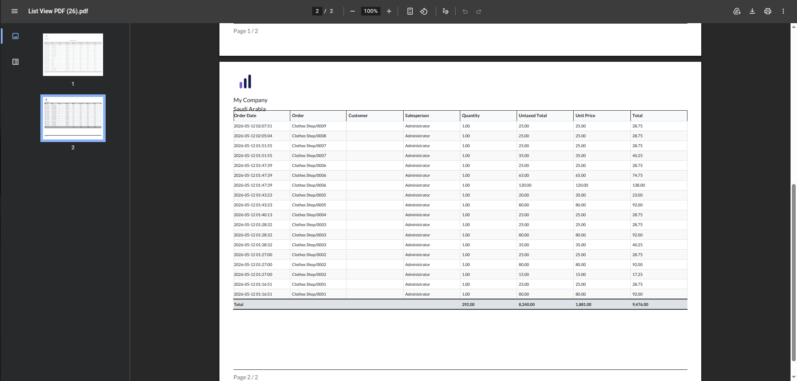
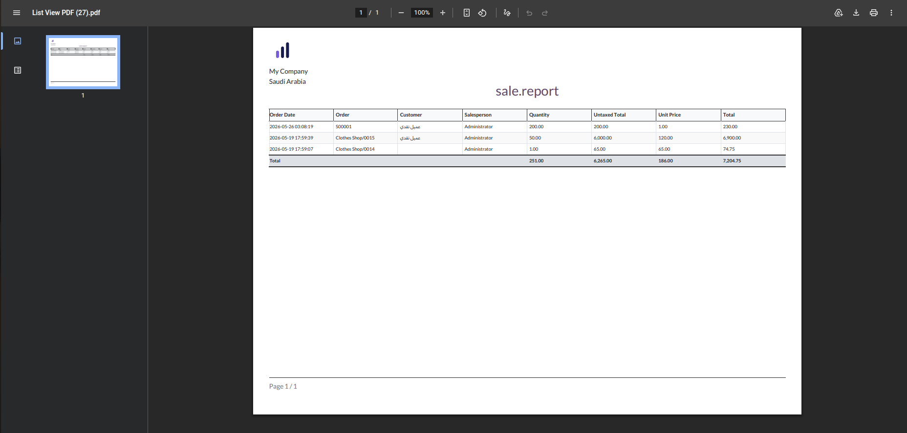

Dynamic Column Detection
Respects Search Filters & Domains
Automatic Grand Totals
Excel-Quality Data Formatting
Stop wasting time creating custom PDF reports for every model. This module adds a global "Print PDF" action to all list views in Odoo. Whether it's Sales, Invoices, Contacts, or custom models, you can now get a clean, grouped, and summarized PDF in seconds.
Access the "Print PDF" option from the Gear (Cog) menu to print all records matching your current filters.
Select specific records and print them directly from the standard "Action" menu.
The report automatically detects numeric columns and calculates grand totals at the bottom. It also supports Odoo's grouping features.

